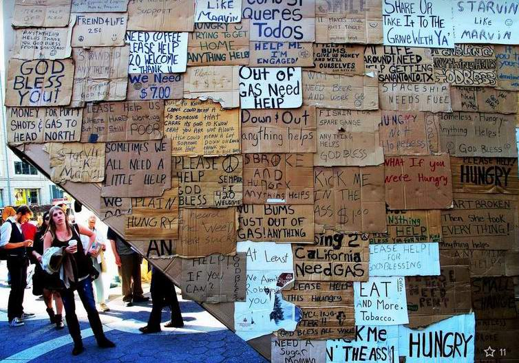
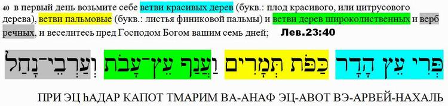
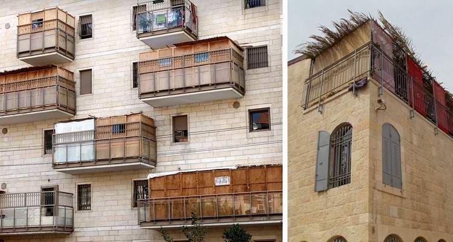
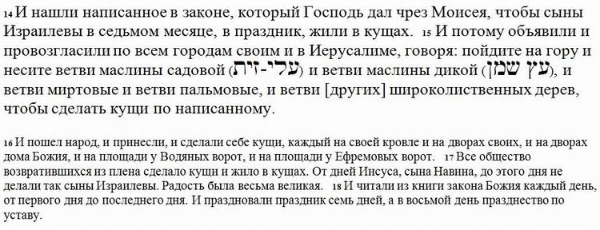

СУККА и ДИКАЯ МАСЛИНА. Сделать кущу по-написанному
В чем пророческий смысл того, что сукка по-написанному должна быть созидаема таким образом? Листья различных деревьев, одни красивые, другие мощные, приятно пахнущие, приносящие чудесные плоды – все это разные народы пред Всевышним.
Вы уверены, что ваша сукка по-написанному?

Мы празднуем Праздник Суккот (Праздник кущей – синод.), праздник воспоминаний о том, как некогда отцы наши, избавленные Всевышним из египетского рабства, жили в шатрах в пустыне Синайской.
Это праздник великой радости и веселья, когда в Израиле исполняют заповедь Торы строить суккот и жить в них семь дней.
Здесь можно посмотреть фото нашей сукки и как мы ее строили.
Выглядит это конечно необычно. Ведь уровень жизни в сравнении с пустыней значительно вырос. Но во время строительства и пребывания в этих шалашах Всемогущий делает что-то в наших сердца. Он побуждает нас вспоминать о Его славе, явленной отцам нашим, размышлять о Его заповедях и... задавать вопросы опять таки по-написанному...

Четыре вида из списка Моше (АРБААТ А-МИНИМ, называемые еще ЛУЛАВ) используют по традиции для особенных молитв с потрясанием (НАТИЛАТ ЛУЛАВ) и танцев. В строительстве сукки используют лишь пальмовые ветви.
Рассматривая устроенную своими руками сукку, я задался вопросом - насколько она соответствует написанному о ней в Торе.

У Моше на этот счет сказано не слишком подробно. Как именно построить сукку. И какое отношение эти арбаат а-миним к ней имеют.
На помощь приходит Писание от Неемии. Он ссылается на заповеданное Всевышним через Моше (Лев.23:40), но детали написанного Моше и Неемие несколько отличаются. Неемия дает более развернутый список видов деревьев, с которыми надлежит праздновать. При этом он уточняет, что ветви этих деревьев надобно употребить для постройки кущей.


Почему Неемия не включил в список речную вербу (араву) – я не знаю.
Две маслины?
Еще одна вещь интересна у Неемии: у него встречаем дерева, которых нет у Моше. И дерева эти вынесены в самое начало списка Неемии – АЛЕ ЗАЙТ и ЕЦ ШЕМЕН. Осмелюсь высказать предположение: первый номер в списке Моше тождественен двум видам из списка Неемии: ПРИ АДАР = АЛЕ ЗАЙТ и ЕЦ ШЕМЕН.
Как мы знаем, ПРИ АДАР может быть переведено как плод цитрусового, но также и прекрасного или славного дерева. Так что прекрасный плод вполне мог бы содержать во внутренности своей нечто сокрытое.
Из послания к Римлянам рав Шауль (он же ап. Павел) говорит об одном Божьем дереве, но с двумя родами ветвей – дикой и природной маслины (см. Рим. 11:17, 11:24). Одно дерево – два народа (иудеи и эллины). Два – в одном.
У Неемии (8:15) на иврите - ЗАЙТ и ЕЦ ШЕМЕН.
Рав Давид Йосифон переводит их как олива и маслина. Но мы знаем, в русском языке это одно и тоже дерево. Различия лишь в том, что одно слово русского происхождения – масло. Другое из латинского – olivа (olio – итал. масло)
Давид Йосифон желая различить два этих дерева, называет их разными словами, указывающими на одно и то же.

Что такое ЭЦ ШЕМЕН – вопрос спорный. Не стану вводить вас в заблуждение, единого мнения на этот счет нет. Есть мнение, что это хурма. Есть также более распространенное мнение будто это – сосна, выделяющая смолу или кипарис.
Основной аргумент здесь (на ивр. см. доказательство того, что речь идет о сосне) в том, что это должно быть строевое дерево, довольно высокое, пригодное для строительных работ, т.к. оно было употребляемо при строительстве храма.
Прямо скажем маслина не слишком пригодна для плотницкого дела. Зато она пригодна для особых видов столярных работ, особенно для резьбы: древесина ее тяжёлая, крепкая и свилеватая. Она прекрасно поддаётся полировке и используется для изготовления мебели. Её ценят резчики по дереву, применяют для инкрустаций и изготовления дорогих токарных и столярных изделий. Она очень крепка, долговечна, плохо поддается гниению.
В отличие от маслины, сосна таки имеет прямой ствол, легко распиливается, зато гораздо менее долговечный, дешевый материал и не пригодна для тонкой резьбы. А в храме Шломо херувимы были вырезаны именно из этого дерева ЭЦ-ШЕМЕН.
Рав Давид Йосефон во многих местах, кромее кн.Неемии переводит это название, как масличное дерево.
Интерес к точности перевода не только в том, чтобы как можно точнее по-написанному построить сукку, но и в том, как точнее истолковать ее пророчество.
 Кстати сказать, когда мы ведем разговор о кошерном строительстве сукки, о пальмах и широколистных деревьях – понятно они дают хорошую тень, что и требуется в нашем случае. Но маслины и тем более – мирты, для целей затенения очень мало эффективны. Это наталкивает нас на мысль о том, что список Неемии и Моше представляет собой не столько эффективные строй материалы для строительства, сколько несут в себе глубокий скрытый символический смысл.
Кстати сказать, когда мы ведем разговор о кошерном строительстве сукки, о пальмах и широколистных деревьях – понятно они дают хорошую тень, что и требуется в нашем случае. Но маслины и тем более – мирты, для целей затенения очень мало эффективны. Это наталкивает нас на мысль о том, что список Неемии и Моше представляет собой не столько эффективные строй материалы для строительства, сколько несут в себе глубокий скрытый символический смысл.
В чем же пророческий смысл того, что сукка по-написанному должна быть созидаема именно таким образом?
Листья различных деревьев, одни красивые, другие мощные, приятно пахнущие, приносящие чудесные плоды – все это разные народы пред Всевышним (сравнение разных дерев с народами находим и в других книгах Библии). Он желает спасти благословить всех. То, что все они «материал» для сукки – это согласуется с посл. Петра: «сами, как живые камни, устрояйте из себя дом духовный...» (1Пет.2:5)
Так что все эти народы, образно называемые - Маслина садовая, Маслина дикая, Мирт, Пальма, Широколистные деревья, - все они призваны быть вплетены в единый шалаш народа Божия.

Здесь можно посмотреть фото нашей сукки и как мы ее строили.
см. также видео сюжет об этом
Для особо любознательных вопрос: почему у Неемии говрится о том, что все виды листьев для сукки нужно принести именно с горы? Т.е. для кущи пригодны именно те, что растут на горе? Вы не знаете? Я – тоже. Какие ваши версии?
Автор: Эфраим Калиш